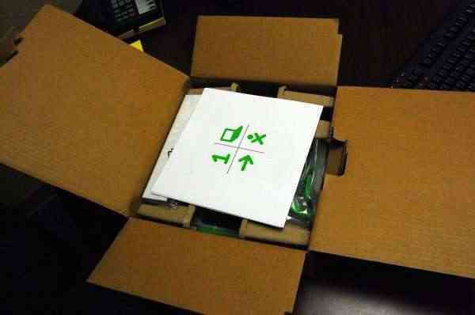
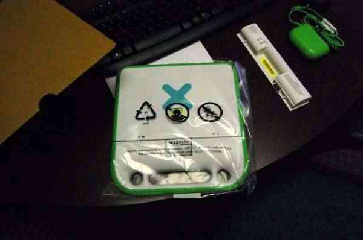

| Introduction | Index | À propos d'OLPC (One Laptop Per Child) |
À lire en premier :
Bienvenue au pays du XO ! Vous êtes prêt à débuter une extraordinaire aventure d'exploration et de découvertes. La jolie petite machine verte et blanche dans le carton est l'outil qui vous permettra de voyager à travers le monde via Internet, de composer et de jouer de la musique, de créer des oeuvres artistiques, de faire des expériences scientifiques, de prendre des photos et des vidéos, de communiquer avec vos amis et votre famille par courrier électronique, et même d'apprendre à créer de petits programmes informatiques.
Mais le XO représente encore bien plus que tout cela. C'est un symbole de votre engagement envers l'éducation des enfants de la planète. OLPC n'est pas un projet informatique, c'est projet éducatif. Nous espérons que vous serez fier d'utiliser votre XO, tout autant que le sont les enfants tout autour du monde.
AAvant de commencer, lisez attentivement ce guide afin de vous faire une idée de ce qui vous attend.
La première chose que vous devez faire est de déballer en douceur votre XO. Conservez tout ce que vous trouvez ! Si vous ne le faites pas, vous risqueriez alors de jeter accidentellement quelque chose d'important. Soyez certain de conserver l'emballage, la boîte ainsi que tous les documents qui se trouvent dans l'envoi.

Chargez totalement la batterie avant d'utiliser votre XO pour la première fois. La section Batterie ci-dessous vous indique comment la mettre en place et connecter le chargeur.
Pendant que vous attendez que votre batterie se charge, lisez le reste de ce guide et regardez ce que vous pouvez faire !
| Introduction | Index | À propos d'OLPC (One Laptop Per Child) |